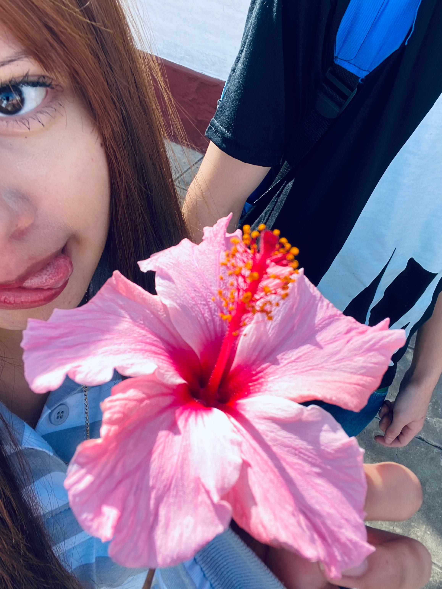
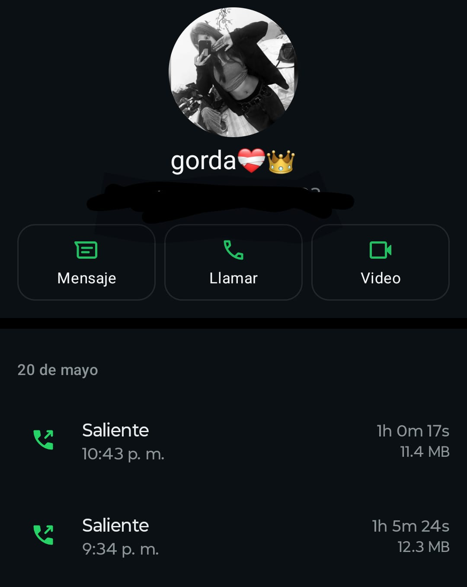
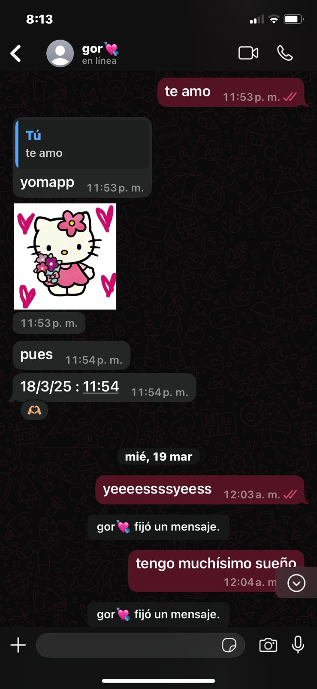
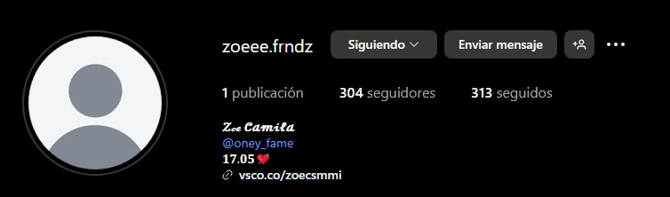
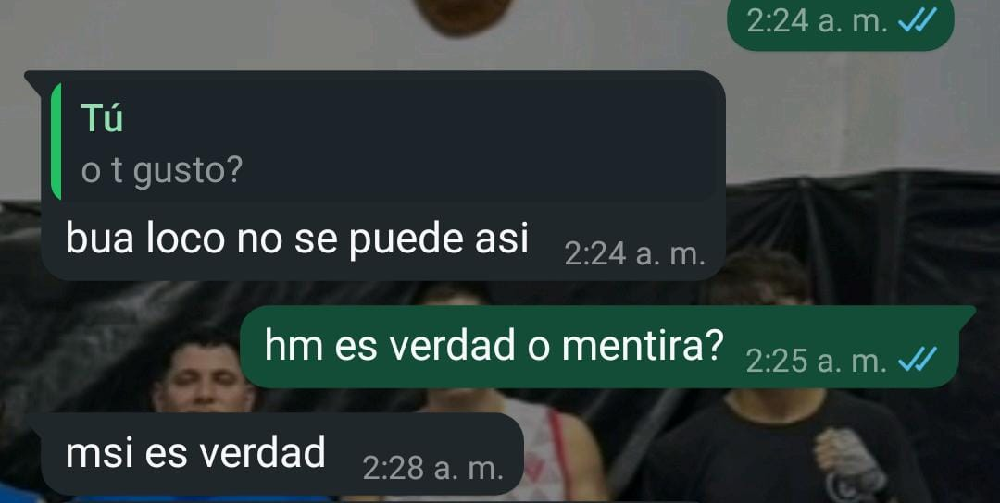

Esa flor que te regale hoy 23/5/25 donde me dijiste " hay que linda flor " y yo fui y la arranque de una del arbol y te la di y me dijiste "hayy, espera le saco una foto" y le sacaste una foto astetic que fue este hermoso recuerdo, que jamas lo olvidare amor mio

En estas dos horas el 20/5/25 fue una de las llamadas mas fuertes y una de las llamadas donde aclaramos todo. Inseguridades, como ibamos a resolver los prolemas en la relacion, desconfianza, aclaracion d lo nuestro
como soy (resolviendo prolemas ect), como resuelvo las cosas, cartas y detalles. Hablamos sobre esos temas y para los dos, fue dificil entendernos pero pudimos, pudimos resolver todo eso y pudimos hablar bien sobre las cosas que nos molestaban o
que nos hacian sentir inseguros mutuamente y yo aclare absolutamente todo tanto como soy ect

Cuando nos hicimos novios por primera vez, el dia 18/3/25 a las 11:54 de la noche nos hicimos novios por primera vez, lo recuerdo como si fuera ayer, lo tan emocionado que estaba por esperar ese si. Aun que no lo creas, yo sabia que ibas a decir que si por que
te re gustaba y te sigo gustando osea ash ash ash

Esa llamada que duro apenas 1 hora, pero fue la mejor hora de mi vida

17/5/25 La fecha donde nos hicimos novios por segunda vez y por ultima vez. Si, Nos prometimos volver una vez mas y intentarlo una vez mas, el sabado 17/5/25 a las 2:31 me escribiste un texto donde me escribias lo que sentias y seguis sintiendo por mi aun que nos hayamos "ido" vos me seguias amando y yo la verdad es que si, yo te seguia amando en ese entonces
y te sigo amando aun que el pasado se tiene que dejar morir y vivir el presente, siempre estare aqui pase lo que pase y no quiero irme otra vez de tu vida por cosas que yo hice o cosa que vos hiciste

Esa fecha me acuerdo patente jakdjsa. 15/3/25. Fue la fecha donde te pregunte si de verdad te gustaba muy sutilmente y me sigo acordando tu "msi es verdad", te juro esa noche a las 2:25 a.m me senti re feliz y a las 2:35 a.m me hable con joaqo y le dije "GOL GOL, JAJAJA" y le mostre la captura donde vos me decias que yo te gustaba y el me dijo "Tenes que cerrar el estadio" y mi respuesta fue "Ysi"
y lo cerre, pidiendote ser mi novia y no me arrepiento nada de a verlo cerrado,